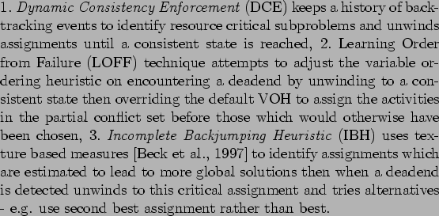

Next: Iterative repair
Up: Review of current research
Previous: Review of current research
Contents
The constructive approach to generating schedules starts from an empty schedule and progressivly selects tasks to assign to time slots, gradually building up a schedule - effectively a path through the search space. As the search progresses deadend points may be reached when a task becomes unassignable - the search must then backtrack, unwinding pervious assignments and attempting to reassign tasks soas to avoid the deadend. An uninformed search can be very inefficient - if we have  tasks to assign and the domain of each task is of size then the problem typically is of complexity , performance of the search can be improved by using domain knowledge (heuristics) via some of the following techniques:-
tasks to assign and the domain of each task is of size then the problem typically is of complexity , performance of the search can be improved by using domain knowledge (heuristics) via some of the following techniques:-
- Variable ordering heuristics
- determine the order in which variables are selected for assginment - in scheduling this corresponds to the order tasks are selected for time-slot assignment- e.g. select the task for assignment that leaves the most options left for remaining tasks. The minimum remaining value (MRV) heuristic always selects the variable with the fewest legal assigments to place next - this causes the search to fail fast and allows rapid pruning of the search tree. [Sadeh, 1991] describes a number of variable ordering heuristics used in the MicroBOSS scheduler. These are split into fixed variable order heuristics where the order is predetermined at start of search and dynamic variable order heuristics where the order is revised each cycle. The MinimumWidth heuristic selects the variable with the fewest arcs i.e. constraint associations with other variables. Their operation resource reliance (ORR) variable order heuristic selects the task which relies most on the most contended resource or time period The minconflicts heuristic [Minton et al., 1992] - at each point the heuristic selects a variable that is in conflict and adjusts its value until it is no longer in conflict. Also maxflex (myers) and mincontention maybe in IR section?)
- Value order heuristics
- determine how the value is chosen to assign to a selected variable. [Sadeh, 1991] describes a filtered survivable schedules (FSS) heuristic which assigns to an operation the time-slot which is likely to be compatible with the largest number of survivable schedules = chance of surviving competition with other operations for possession of a resource (time). (Note:simplify the detailed decription in section 6 of the article - concentrate on cliques (clumpings) where graph has tightest constraints = texture heuristics also [Beck et al., 1997] ). (Note: A couple more examples).They also describe a mechanism to allow the scheduler to switch to a simpler (cheaper) value order heuristics when contention drops below a threshold.
- Constraint propagation
- A more general improvement can be made using constraint propagation techniques - here the implications of a constraint on a variable are tested against the constraints on other connected variables. e.g. for arc-consistency there must be a consistent assignment of variables to
 for every valid assigment of connected variable , if not we must delete values from one or other domain. The effects are then propagated to neighboring arcs. The name stems from the way new constraints are inferred and added to the constraints set.
for every valid assigment of connected variable , if not we must delete values from one or other domain. The effects are then propagated to neighboring arcs. The name stems from the way new constraints are inferred and added to the constraints set.  -consistency takes this further by insisting that for every assigned variables a consistent value can be assigned to any variable. Conflict analysis though costly (typically ) [] can reduce backtracking by pruning the search tree. There is a trade-off in the time taken to perform the consistency checking and the reduction in problem size generated. In [Johnston and Miller, 1994] the use of node (), arc ()and path () consistency is used to prune the search space for scheduling observations with the Hubble Space Telescope (HST). An example of arc-consistency between binary-constrained variables is given where two observations and with a precedence constraint after by at least with each observation having unit duration (for simplicity) and restricted to the interval then the sub-interval
is excluded from the domain for and the subinterval
is excluded from the domain for . The trade-off in time spent consistency checking against problem reduction is handled in SPIKE by enforcing a strict time-limit for this procedure.
-consistency takes this further by insisting that for every assigned variables a consistent value can be assigned to any variable. Conflict analysis though costly (typically ) [] can reduce backtracking by pruning the search tree. There is a trade-off in the time taken to perform the consistency checking and the reduction in problem size generated. In [Johnston and Miller, 1994] the use of node (), arc ()and path () consistency is used to prune the search space for scheduling observations with the Hubble Space Telescope (HST). An example of arc-consistency between binary-constrained variables is given where two observations and with a precedence constraint after by at least with each observation having unit duration (for simplicity) and restricted to the interval then the sub-interval
is excluded from the domain for and the subinterval
is excluded from the domain for . The trade-off in time spent consistency checking against problem reduction is handled in SPIKE by enforcing a strict time-limit for this procedure.
- Deadend recovery heuristics
- The occurance of deadends resulting in the need to perform backtracking indicates that the chosen variable and value ordering heuristics and consistency enforcing technique are insufficent to cope with the problem in hand, a consequence of re-application of these same heuristics on backtracking is that the same deadends may be encountered repeatedly - a thrashing effect similar to that which occurs in disc access. Recovery heuristics are designed to allow for more intelligent choice on how to backtrack. [Sadeh et al., 1994] describes several general techniques for improving backtracking search using the partial conflict set of the deadend (i.e. the set of activities which have blocked progress of the search at that point and which may have been involved in previous deadends):-

A disadvantage of the constructive approach is its offline nature - during execution any break casues the whole schedule from that point onwards to have to be regenerated.
Next: Iterative repair
Up: Review of current research
Previous: Review of current research
Contents
Steve Fraser
2008-01-31